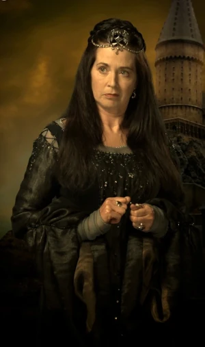
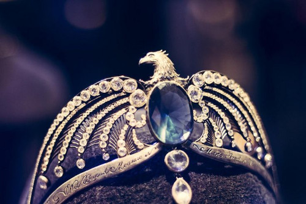

Quem fundou a casa da Corvinal ?

A fundadora da Corvinal foi Rowena Ravenclaw, uma bruxa escocesa conhecida por seu intelecto e criatividade, e relembrada como uma das maiores bruxas de sua época.
Durante a sua vida foi sempre bastante pessimista mais mesmo assim corajosa. Em quanto criança viveu com os seus pais bruxos, que não lhe ligavam muito. Por isso aprendeu sozinha tudo o que até agora sabe.
Rowena tinha um dom imenso para magia, pois ela possuía uma inteligência inacreditável e uma mente sempre alerta, ela era umas das melhores alunas da sua classe, todos ficavam impressionados com a inteligência dela.
Sempre descrita como "bonita, porém intimidadora", Rowena morreu após ficar repentinamente doente. A lenda diz que sua morte surgiu em decorrência do coração partido, após ver sua filha - que se tornaria a fantasma da Corvinal - fugir e morrer nas mãos do Barão Sangrento.
Algumas curiosidades interessantes da casa.
Símbolo da Corvinal.
Há, basicamente, dois símbolos da Corvinal: o dos livros e o dos filmes. Nos livros, a casa é representada por uma águia e suas cores são azul e bronze, uma vez que a casa seria o ar dos quatro elementos.
Já nos filmes, há duas alterações consideráveis: as cores da casa passaram a ser azul e prata e o animal que a representa virou um corvo.

O diadema de Rowena Ravenclaw.
principal objeto de valor de Rowena Ravenclaw é o Diadema. Reza a lenda que o utensílio, quando utilizado, aumentava a sabedoria de seu usuário, o que faz completo sentido, relembrando o fato dele ter pertencido à fundadora da Corvinal.
O objeto foi roubado por Helena Ravenclaw, a filha de Rowena, e escondido em uma árvore oca, onde passou anos sem ser encontrado. Séculos depois, Tom Marvolo Riddle conseguiu convencer o fantasma de Helena a contar a localização do objeto. Uma vez descoberto, Riddle - futuro Voldemort - o utilizou para fazer uma Horcrux, e o escondeu na Sala Precisa de Hogwarts, até ele ter sido destruído por Vincent Crabbe com Fogomaldito.

Sala comunal.
A Sala Comunal e os dormitórios da Corvinal são, assim como os da Grifinória, localizados em uma das torres do castelo de Hogwarts. Ela é espaçosa e circular, e possui janelas arqueadas graciosas. As paredes são recobertas com seda nas cores azul e bronze.
O teto é pintado com estrelas, e perto da entrada dos dormitórios, há uma estátua de Rowena Corvinal. Diferente das outras Casas, não há senha para entrar na Sala Comunal da Corvinal. Para isso, deve-se responder a um enigma lançado por um batente em forma de águia.

O fantasma da casa.
A fantasma da Corvinal é a única a ter relação direta com a fundadora da casa. Trata-se de Helena Ravenclaw, filha de Rowena. Invejando a atenção dada para sua mãe, Helena fugiu para a Albânia com o Diadema Perdido de Corvinal. Rowena, doente, resolveu mandar um nobre para buscá-la. Esse nobre, que viria a se tornar o Barão Sangrento da Sonserina, em um momento de ira, assassinou Helena, que virou a Dama Cinzenta. Percebendo o que fizera, ele se matou logo em seguida, ainda coberto do sangue de sua amada.